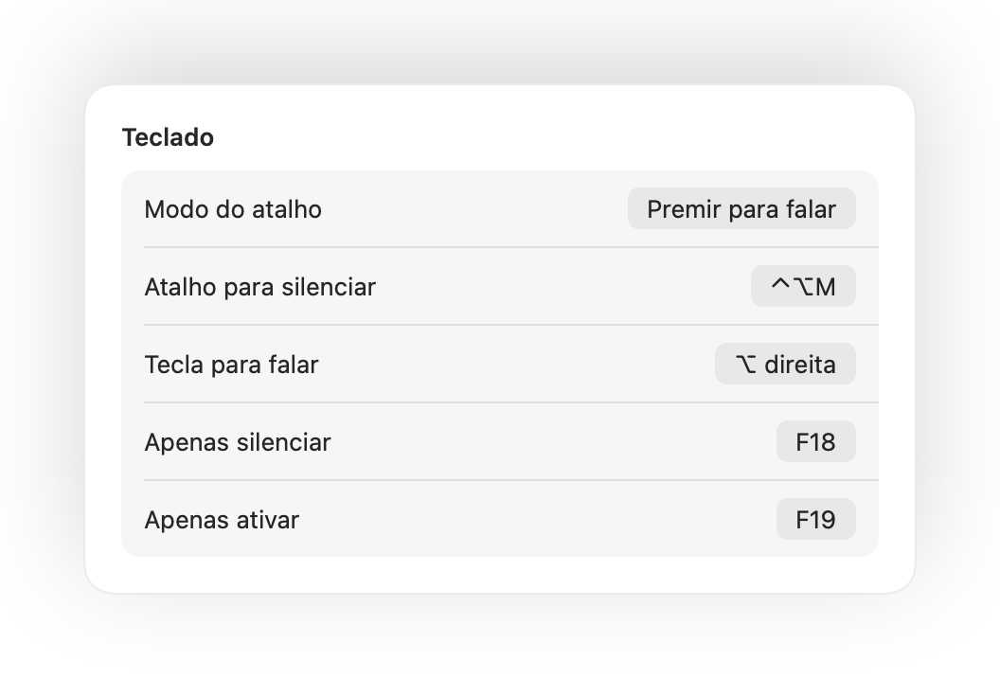

Premir para falar no Mac, em qualquer app
O modo de premir para falar mantém-te silenciado até manteres uma tecla premida. É a forma mais fácil de manter o silêncio em reuniões grandes ou locais barulhentos no teletrabalho, mas poucas apps oferecem esta opção e cada uma usa uma tecla diferente.
O Muffle adiciona o premir para falar a qualquer app no Mac. Escolhe Premir para falar nas Definições, mantém o atalho premido para falar e solta para voltar a silenciar.
Utilizar o premir para falar
- 1
Instala o Muffle.
- 2
Nas Definições do Muffle, define Modo do atalho para «Premir para falar».
- 3
Mantém Controlo-Opção-M premido enquanto falas.
- 4
Larga a tecla. Estás silenciado novamente.

- Preferes uma tecla individual? Define uma tecla para falar nas Definições: ⌥ direita, fn ou um botão adicional do rato.
- Escolhe um atalho prático nas Definições do Muffle, por exemplo uma tecla F.
Perguntas frequentes
O premir para falar funciona no Google Meet?
Sim. O Muffle silencia o microfone diretamente, pelo que o premir para falar funciona no Meet, Zoom, Teams, Discord e em qualquer outra app.
Existe a opção de premir para silenciar?
Sim. Escolhe «Premir para silenciar» e mantém o atalho premido para silenciar momentaneamente, como um botão para a tosse.